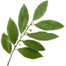

Correspondence Grimoire
Dysmenorrhoea

Bay Laurel Essential OilDysmenorrhoea is painful and difficult menstruation, marked by cramping pain in the lower abdomen, back, or thighs that accompanies the menstrual period. It may be primary (driven by prostaglandin release and uterine muscle contraction) or secondary (linked to conditions such as endometriosis, fibroids, or pelvic inflammatory disease). Aromatherapy supports relief by easing uterine spasm, calming the nervous system, and warming the pelvic region.
Many oils useful for dysmenorrhoea are emmenagogues or uterine stimulants and should be avoided during pregnancy, including clary sage, jasmine, juniper berry, marjoram, rose, rosemary, Spanish sage, tarragon, and yarrow. Patch test any unfamiliar oil before broader topical use, and consult a qualified practitioner if cramps are severe, unrelenting, or accompanied by heavy bleeding or fever.
Suggested Application of Oils for Dysmenorrhoea
Massage: Dilute 4 to 6 drops of essential oil per ounce of carrier oil and massage with slow, warming strokes across the lower abdomen, lower back, and sacrum. Begin a few days before the period is due and continue through the cramping phase to ease uterine spasm and improve local circulation.
Compress: Add 5 to 10 drops of essential oil to a bowl of warm water, agitate to disperse, soak a clean cloth, wring out, and lay over the lower abdomen. Cover with a dry towel to retain heat, and replace when the compress cools. Useful during acute cramping when massage feels too direct.
Bath: Add 4 to 6 drops of essential oil to a tablespoon of carrier oil or unscented bath base, then disperse in warm water and soak for 15 to 20 minutes. Warm aromatic baths relax the abdominal wall, ease lower-back tension, and soothe the nervous system through the period.
Oils to Use to Address Dysmenorrhoea
 Lemon Balm Essential Oil
Lemon Balm Essential Oil Basil Essential Oil
Basil Essential Oil Carrot Seed Essential Oil
Carrot Seed Essential Oil German Chamomile Essential Oil
German Chamomile Essential Oil Roman Chamomile Essential Oil
Roman Chamomile Essential Oil Cypress Essential Oil
Cypress Essential Oil Frankincense Essential Oil
Frankincense Essential Oil Hops Essential Oil
Hops Essential Oil Jasmine Absolute
Jasmine Absolute Juniper Berry Essential Oil
Juniper Berry Essential Oil- Lavandin Essential Oil
 Spike Lavender Essential Oil
Spike Lavender Essential Oil- Lavender Essential Oil
 Lovage Root Essential Oil
Lovage Root Essential Oil Marjoram Essential Oil
Marjoram Essential Oil Cabbage Rose Absolute
Cabbage Rose Absolute- Rose Otto Oil
 Rosemary Essential Oil
Rosemary Essential Oil Clary Sage Essential Oil
Clary Sage Essential Oil- Spanish Sage Essential Oil
 Tarragon Essential Oil
Tarragon Essential Oil Yarrow Essential Oil
Yarrow Essential Oil